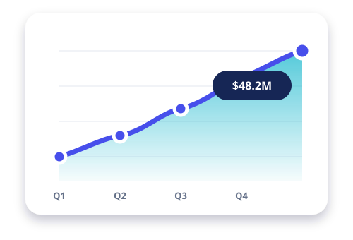

Quarterly performance
HDOX Quarterly Review
A rich, portable document rendered from semantic HTML and CSS.

01 / Executive summary
Strong close, expanding momentum
The quarter finished above plan, supported by disciplined delivery and sustained customer growth across every major region.
$48.2M
Quarterly revenue
+18.4%
94%
Customer retention
+2.1 pts
38%
Gross margin
+4.0 pts
02 / Regional performance
Balanced growth across markets
| Region | Revenue | YoY growth | Target | Status |
|---|---|---|---|---|
| North America | $18.6M | 21.2% | $17.8M | Ahead |
| EMEA | $14.1M | 16.8% | $13.5M | Ahead |
| Asia Pacific | $9.8M | 19.4% | $9.6M | Ahead |
| Latin America | $5.7M | 11.6% | $5.9M | Watch |
03 / Strategic signals
What changed this quarter
01
Enterprise adoption
Large-account expansion contributed 43% of new revenue, with a 112-day average sales cycle.
02
Product-led growth
Self-service upgrades grew 29%, reducing acquisition cost while improving customer activation.
03
Delivery efficiency
Automation initiatives shortened release cycles by 21% and improved forecast reliability.